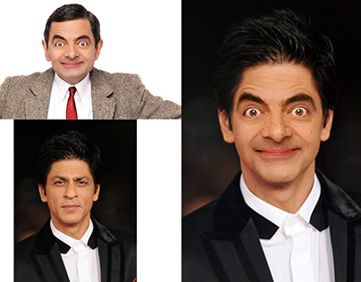
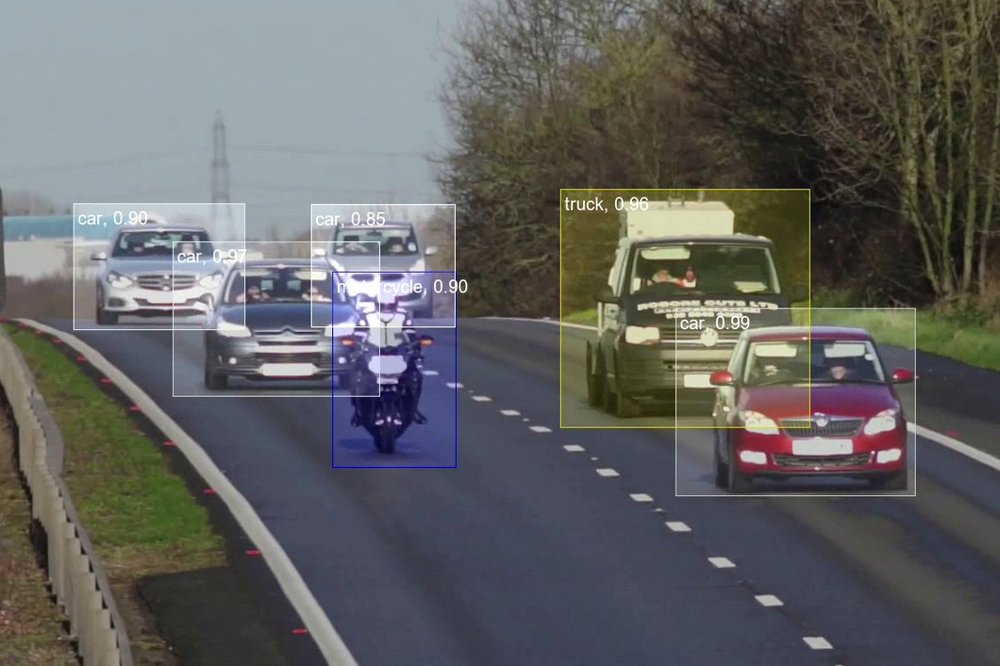

Latest Projects



Seeking Full-Time Opportunities in the Data Science and AI Domain.
Passionate about AI, Data Science, and Machine Learning. With an Bachelor's in Computer Science
from Rana University (3.9 GPA), I have experience as an AI & Data Science Freelancing Platforms
and as an ML Engineer at Rana University. Proficient in Python, SQL, Power BI,
Machine Learning,
NLP, Big Data, and Cloud platforms (AWS, GCP, Azure).
Greetings! I’m Noorullah Zamindar, a Master's graduate in Computer Science & AI. I have hands-on experience in AI, Big Data, and automation. I specialize in leveraging technologies like Python, Machine Learning, Power BI, and Cloud to transform data into actionable insights. I'm currently seeking full-time opportunities to apply my skills and contribute to impactful projects.
Python, R, Numpy, Pandas, SQL, Power BI, Java-Script, Matplotlib, Seaborn, Flutter
TensorFlow, PyTorch, Scikit-learn, Keras, LangChain, Hadoop, Spark, Kafka, Hive, NiFi
Recommendation Systems, Clustering, NLP, Regression, Prompt Engineering, Git
PostgreSQL, MySQL, MongoDB, GCP, Azure, Docker, Oracle
Cross-functional collaboration, Problem-solving, Communication, Project Management